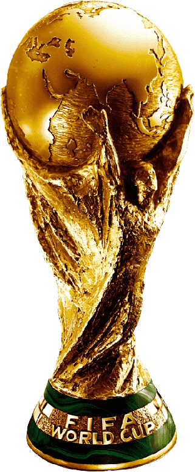
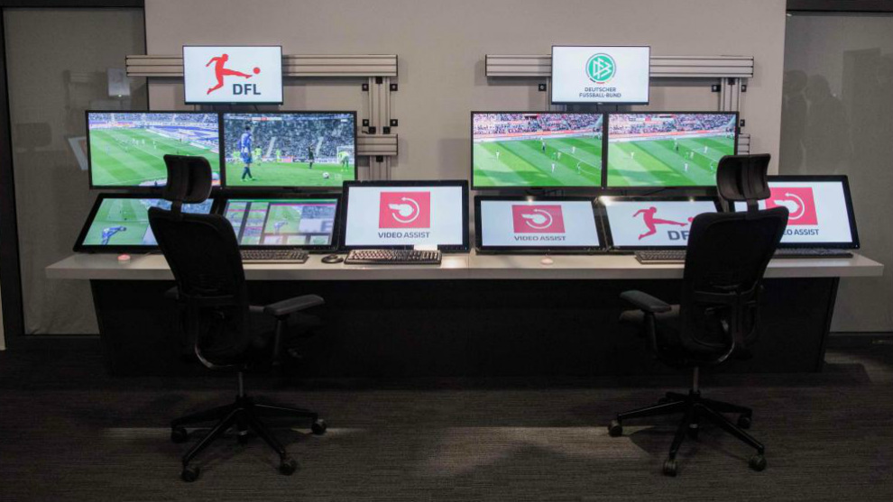

El fútbol moderno ha cambiado. A la gran revolución que supuso el buen estado de prácticamente todos los
terrenos de juego, ahora se ha añadido una que afecta al juego incluso más que el propio terreno en el
que se juega. El VAR ha cambiado los tiempos, la forma de celebrar algunos goles, el ritmo de los
partidos y, por qué no decirlo, la picaresca.
En este artículo reflexionamos y analizamos qué es el VAR y cómo ha cambiado para siempre nuestro
fútbol. Todo lo que necesitas saber para entender y saber cómo funciona el VAR, se te muestra de una
forma breve, resumida y sencilla a continuación.
El VAR tiene como objetivo ayudar al árbitro principal a evitar errores graves y manifiestos durante el partido, como por ejemplo un penalti claro no pitado o un gol en fuera de juego. El equipo del VAR está compuesto por árbitros y asistentes de LaLiga Santander. Únicamente puede actuar si se da alguno de los cuatro supuestos que la FIFA considera jugadas decisivas: goles, penaltis, tarjetas rojas y errores de identificación de jugadores.
